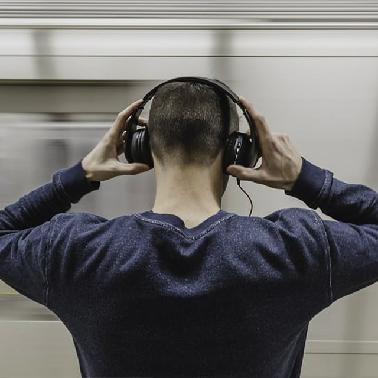

Listening to music is my cherished hobby. It's my personal retreat into a world of melodies, rhythms, and emotions. Whether I'm relaxing at home, commuting, or out for a walk, music accompanies me, setting the mood and enhancing every moment. From upbeat tunes that lift my spirits to soulful melodies that resonate deeply, each song becomes a soundtrack to my life, evoking memories and emotions. It's a simple pleasure that brings me comfort, joy, and endless inspiration.